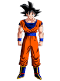
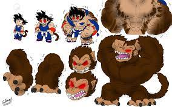
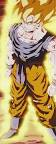
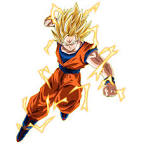
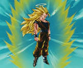
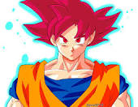

Goku and His Forms

Goku Base Form
This is Goku in his base form. Don't mistake yourself he is very powerful even in this state.

Goku Great Ape Form
This is Goku's Great Ape form and he only tranformed into this form twice before Master Roshi
blew up the moon. Kami, the Gaurdian of Earth permanently removed the tail and restored the moon.

Goku's Super Saiyan Form
This is Goku's Super Saiyan Form. He first tranformed into this form when Frieza killed Krillen.
Frieza was able to keep up for awhile but in the end Goku prooved to be more powerful.

Goku's Super Saiyan 2 Form
This is Goku's Super Saiyan 2 Form. We do not see him obtain this but he used it in his fight against Vegeta
when Vegeta allowed Babidi to control his mind.

Goku's Super Saiyan 3 Form
Goku's Super Saiyan 3 Form was first seen in his fight against Majin BUu when he was buying time for Trunks.
This form takes up a lot energy and pretty much drained any time left he had on earth. This form is rarely used due to the energy
consumption.

Goku's Super Saiyan God Form
This is Goku's Super Saiyan God Form. This was obtained per the ambition of Beerus as Beerus
was desperate for a challenge. This was obtained by 5 good-hearted saiyans sharing their energy with Goku.